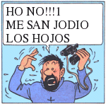

Onomatopeya
 De: La Frikipedia, la enciclopedia extremadamente seria.
De: La Frikipedia, la enciclopedia extremadamente seria.
| De la serie la Lingüística es fácil:
|
| Onomatopeya
|
| 
|
| Yajspuaktskaaaaa ajjjaaa ... más o menos.
|
|
| Descubridor
|
Domenikos Theocathopotoupoulodópulos.
|
| Idiomas habituales
|
Esto no tiene idioma.
|
| Estructura
|
Morfosintácticamente el significado lexicosemántico es irrelevante.
|
| Morfología
|
No.
|
| Dificultad
|
-1
|
| Frecuencia de uso
|
Demasiada
|
| Notas
|
La fotografía no se corresponde con la realidad.
|
Una onomatopeya es la manera más sencilla de representar una situación. Se trata de un lenguaje muy antiguo que todos llevamos dentro, pero que en especial los frikis (tal vez sea por el aislamiento social, por la mente infantil o por la completa carencia de sentido del ridículo) solemos suelen utilizar. De este modo, aquella idea de la que queremos que nuestros congéneres se queden impregnados resulta descrita de una manera rápida, sencilla, divertida y gráfica, sin necesidad de mayores explicaciones.
Historia
Como ya hemos mencionado, las onomatopeyas son más viejas que el acto de defecar, puesto que las utilizaron nuestros ancestros como el primer sistema de lenguaje primigenio desde que bajaron de los árboles. En aquel primer momento se utilizaban palabras moy obvias para denominar situaciones o cosas, como Guauguau (perro en celo), Arfg-arfg (Consumación del amor canino), Aing-aing (perro rechazado por congénere más fuerte), Crack (hostión), Catacrack (Hematoma encefálico), GRrrhargny (dientes de sable), Eeeerck (Dientes de sable haciendo la digestión), Pío-pío (pájaro), PÍO-PÍO (pájaro de 200 kilogramos posado sobre un poste), Jejejere (la vaca que ríe) etc.
De aquel modo era muy sencillo distinguir a qué hacían referencia todos esos sonidos, y empezaron a contarse historias. Aún así, las onomatopeyas no eran suficientes para hablar de temas abstractos como "jodido", "sistema hexadecimal", "coordenadas paramétricas" o "el sonido que hacen los patos". Por esa razón ese lenguaje primitivo fue evolucionando hasta convertirse en un auténtico diccionario mucho más complicado pero más variado, que ha llegado hasta nuestros días. No por esa razón se dejaron de usar onomatopeyas, puesto que debido a ciertas lagunas de la enseñanza de primaria de la época mucha gente todavía usaba sonidos para denomiar objetos. También se usaron onomatopeyas para denominar acciones y objetos que se habían descubierto hace poco, como la gayola ("zap-zap-zas"), el conejo con cebolla ("aargnnémmsf") y el Kung Fu Panda ("sacaflúsh").
En cuanto a la palabra Onomatopeya fue inventada por los Griegos (que de tontos no tienen ni un pelo). De ahí la raíz "Ono-" (algo así como "conexión a internet de alto pago y alta velocidad", o también "uno mismo"(véase onanismo)), "-mato-" (del verbo "Mateo", matar, también puede significar "proyectil"), y la desinencia "-peya" (tal vez sea algo así como "-pedia", pero es más probable que se refiera a "asco, repugnancia"). De esta manera, una traducción algo burda de la palabra sería asco por proyectil de alta velocidad, lo que se refiere indiscutiblemente a la cantidad de saliva que se gasta y se expulsa del organismo cuando se vocaliza bien una onomatopeya. La otra opción, menos probable, es que signifique matarse-a-uno-mismo-pedia. Les seguiremos informando.
Gente que utiliza onomatopeyas
A estos individuos se les conoce como onomatopeyistas, o onos para abreviar. Podemos dividirlos en diversas subcategorías:
- Ono conciso (OC): Utiliza las onomatopeyas en muy contadas ocasiones en las que considera que es necesario agregar más información al contenido de su narración. No es muy interesante, demasiado aburrido.
- Ono virus u Ono Clip De Word: Es ese tipo que no habla mucho y que sirve para rellenar hueco entre los grupos de amigos, pero que es de gran utilidad (y motivo de frustración), pues complementa las conversaciones de sus coetáneos con una onomatopeya no solicitada. Ejemplo:
- Compañero: ...Y entonces me giro y veo al puto gato del vecino en mi habitación
- Ono Virus: ¡Miaaauurr! (o, en su defecto, ¡Pfffffff!)
- C: ...Y el camión se estrella en un tanque de gasolina
- OV: ¡KAABOOOOOMMM!
- C: Y entonces Lydia me dejó....
- OV: BAM! (golpeando la mesa contundentemente, con un poco de hijopdeputismo)
- Ono Muy Friki: Es el que ha visto demasiadas películas y leídos demasiados cómics, con lo que no duda en añadir a situaciones como peleas o accidentes (ya sean reales o en la tele) expresiones como ¡Ouch!, ¡Slap!, ¡Newt!, ¡Pooo! u ocasionalmente ¡Dish! (mientras mira hacia el suelo y tuerce la cabeza hacia un lado, como en los mangas japoneses), aunque ésta última es más utilizada en situaciones de sorpresa o contradicción.
- Ono Substitutivo: Tal vez
seamos sea de los más insoportables, ya que es capaz de substituir palabras u oraciones enteras por un sonido de estos, que suelen ir acompañados de grandes movimientos que crean ambientación, como girar la mano al imitar a una batidora, golpear una palma con otra cuando se describe un aplastamiento o un golpe duro, o meterle un duro puñetazo a la mesa (si la hay) para describir algo muy fuerte. Es casi como si hablasen en mimo, pero con sonido, o sea, todo lo contrario... bueno, es algo indescriptible. Ejemplo:
- OS: Y entonces, cuando estaba a punto de entrar a mi habitación, nyeeeeiiick (puerta abriéndose) ¡Ktratabooomm, JAJAJAJA! (ha pasado algo muy, gordo y divertido, pero tú nunca lo sabrás porque no lo has entendido en su jerga.
- OS: Y el guarda dice, Alto ahí, Chack-chack (sonido de arma cargándose, con gran dosis de saliva salpicando) ... y ¡¡¡jjjjpush, jjjjpushh, jjjpushhhhh...!!! (por algún motivo es el sonido conocido internacionalmente como disparo de un arma) huishhhh (pasando al efecto de cámara lenta tipo mátrix, acompañado de aspavientos con los brazos para indicar la realentización) juushhh..., juuushhh, juuuuúúúúshhh...(balas pasando por el aire a cámara lenta, probablemente con protagonista esquivándolas, cosa que será patéticamente reproducido por el narrador, quien intentará imitar la trayectoria de las balas con los dedos índices extendidos, cosa imposible, pues no tiene tantos dedos índices) huwww... (protagonista volviendo a cámara real).
Y así sucesivamente.
¿Por qué no hablar normal?
Muy sencillo. La respuesta es pereza. Vagancia. Desgana. Y es que cuando estás describiendo algo que los demás no han visto, debes dar rienda suelta a tu imaginación para que lo interprete de la manera menos entendible posible, para que así tus amigos se queden con la intriga de saber qué habrá pasado y se lo piensen dos veces antes de dejarte marginado. ¿Para qué buscar palabras y sinónimos si un simple crack lo dice todo?
Diccionario Onomatopeya-Español
- Eeeeercgk - acción y efecto de eructar.
- ¡Óoohohojooo..., muaaaaa! - llanto de mujer o de varón afeminado.
- Buuaaaaa!! - llanto de bebé o de mal actor.
- Jejeje - risa de chaval
- JAJAJAJAJA - risa de hombretón
- MHUAHAHAHAHAHAAAA!! JAAHAHAHAHAHAAAAAA!! JÁÁÁÁJAJAJAJAJAAAA!! - risa de hombre maléfico/friki.
- AJAJJJAJAJAAJAJA - risa de un hoygan
- Guau! - Perro (Bup! en catalán, Wof! en inglés, Ahívalahostia! en euskera).
- Meeeuu - Gato
- Miaauuu - Idiota imitando burdamente a un gato.
- Cuack - Pato
- Híiiiiiiiiiiiiiiiii-hòòòòoooooooo.... Bbrrrrff.... - Caballo.
- Hòoooiiiiiiii.... - Caballa quejándose.
- Kikirikíiiiiii - Pollo.
- Co-co-co-co.cocóoo-co. -
polla Hembra del pollo.
- Kirikiki! - Idiota imitando burdamente un pollo.
- Corococó - Idiota imitando una polla.
- Co-co-co-coco-co ... - Tartamudo imitando a la hembra del pollo.
- Co-co-co-coco-co ... - Tartamudo en una frutería.
- Co-co-co-coco-co ... - Tartamudo en el bar pidiendo Cocacola.
- Co-co-co-coco-co ... - Tartamudo diciendo "¡Cohone ya, ya basta con la coña!"
- Ooooohhh - Actriz porno.
- Ooooohhh, yes - Actriz porno profesional.
- Oh-oh-oooh - Actor porno.
- ΦΧΨΩαβγδε - Extranjero del este.
- ほンヴヵばぱ - Extranjero de más al este.
- Mein Kiempf ? - Guiri.
- ヘベユョヨラリルレ ® ™ ñ Ñ ágdfgéígfadgóú Á? - Wombat humungoso retozando.
- Orniii! Ornii! - Ornitorrinco tartamudo.
- Waaaaaaaaaaaaaaaaaaaaaaaaaaaaaaaaaaaaaaaaaaaaaaaaaaaaaaaaapppaa!! - Obrero español.
- Joooooooooooooooooooorrrlll - Chiquito de la calzada (o al menos se intenta).
- Prrrrrrtttt - Flatulencia.
Autor(es):
- Doctor grijander
- Cañonero
- Frikiman
- Aque
- Epikurolibre
- Roms
- Azulejos
- El Sevillano
- Romeo 61
- Cibercrank
Frikipedia 2005-2016, Licencia
GFDL 1.2 - Extraído por FrikiLeaks